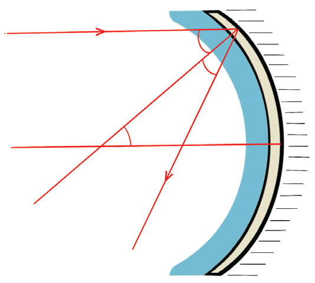
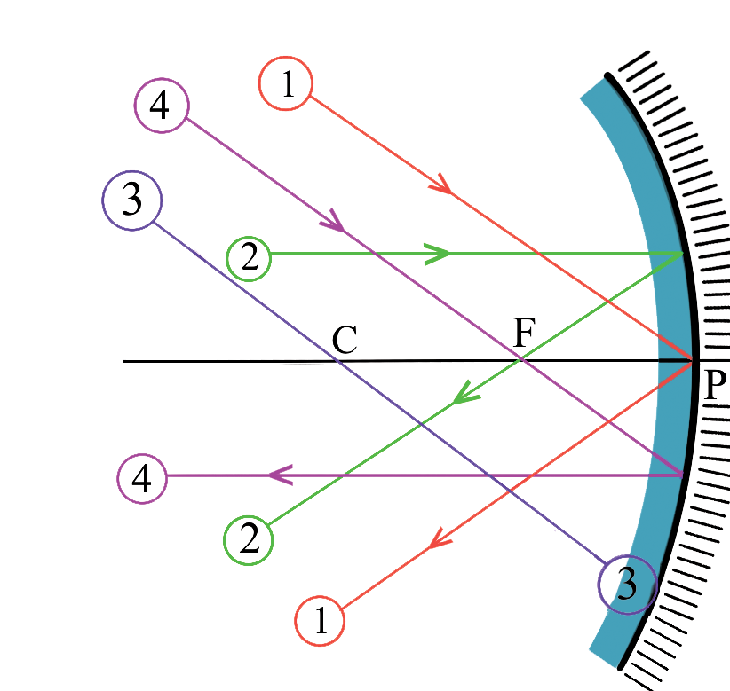
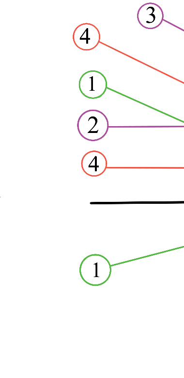
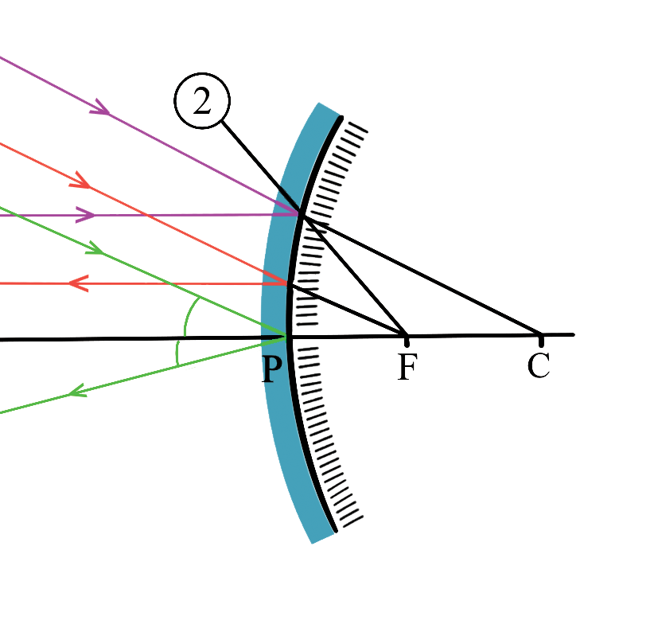

For a small aperture of the mirror around the vertex,
MF = PF
PC = PF + CF = PF + PF = 2PF
R = 2f
Therefore,

Materials: concave mirror, black carbon paper, metre rule
Procedure
Questions
What is the length of the radius of curvature of the mirror?
What happened to the black carbon paper in step 5?
Determining the image location for curved mirrors is essential when using mirrors for various purposes.
Methods for locating images formed by curved mirrors include the geometrical method and the mirror formula.
The geometrical method involves using ray diagrams, which are valuable tools for determining the path light takes from the object to our eyes through the mirror.
Figure 4.23 shows the reflection of light rays by curved mirrors.


